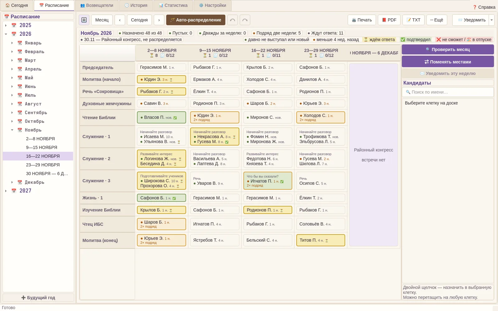

Month board (drag-and-drop assignments and schedule checks)¶

Click “Month” on the schedule toolbar to see the whole month on the right, with one column per week and one row per part. You can fill the month without switching between weeks.
Week headers. Each column shows the week date, “CO visit” if applicable, and “❌ N” for declines and “⏳ N” for outstanding replies. Publishers usually receive paper slips at the meeting, so the header leaves out the count of people who have yet to be emailed. Click a header to open the weekly table.
Summary above the board. Colored dots accompany the following counts:
- “Assigned X of Y”
- “Empty: N”
- “Twice in a week: N” when the same person is assigned twice
- “Two weeks in a row: N” for a repeated role
- “On vacation, replacement needed: N” for assigned publishers who will be away
- “Cannot make it: N” for declines
- “Awaiting reply: N” for publishers who have been notified and have yet to reply
- “Elders on student assignments: N” when the board has any. These assignments are allowed and flagged for review.
The legend shows a green dot for “not assigned for a long time or new” (eight weeks or more), orange for “less than 4 wk ago”, and backgrounds for “⏳ awaiting reply”, “✅ confirmed”, and “❌ unavailable / 🏖️ on vacation”.
Cells
- Each publisher is shown by a short name, with the time since their last assignment, for example “8 wk”, or “new”. Email markers are ⏳ for awaiting reply, ✅ for confirmed, ❌ for declined, and ⚠✉ for a send error.
- Elders often have assignments every week, so their cells omit the time-since-assignment dot.
- Problem cells are highlighted:
- “— empty” for an unfilled slot (red background).
- “2× in a row” for the same role as last week (yellow border).
- “⚠️ twice in a week” for two assignments in the same week (red background).
- “⚠️ elder on a student assignment” for an allowed assignment flagged for review (yellow border).
- “❌ cannot make it — replacement needed” for a decline (red background).
- “🏖️ on vacation — replacement needed” for an assignee away that week (red background).
- Cells use different background colors for awaiting replies and confirmed assignments.
- Hover or touch and hold to see the full name, time since the last assignment, and reply status.
- Memorial, assembly, and convention weeks occupy one merged column with the event name and “no meeting”. These weeks are skipped for assignment.
Candidate panel. Select a cell to see eligible publishers on the right, with the same history, availability, and conflict hints as in the selection dialog. Above the list are “🔍 Check the month” and the week notification button (“✉️ Notify this week” or “✉️ Notify week [date]”). It addresses people still awaiting an email. If everyone has already received one, it opens with all assignees available for a repeat email.
Check the month before printing. “🔍 Check the month” lists empty slots, absences and excluded weeks, assignments twice in a week or in consecutive weeks, elders on student parts, mismatches in gender, qualifications, or status, and declines. Entries are grouped by week. Select one to highlight its cell and see candidates. Keep the window open while making changes and click “Refresh” afterward.
Keyboard controls. Use the arrow keys to move, Enter to choose a publisher, and Delete to clear a cell after confirmation. The right-click menu offers “⏳ Remind those who have not replied” when anyone that week is still awaiting a reply. It sends a repeat email to those publishers only.
Swap two publishers. Select a cell and click “⇄ Swap” on the right or “⇄ Swap [name]…” in the cell menu. Select the second cell in the same week or another week. With the keyboard, use the arrow keys and Enter. The app asks for confirmation and warns if either person fails the new part's gender, qualification, or status rules. While choosing the second cell, click “✕ Cancel swap” or press Esc to cancel.
Make assignments on the board
- Double-click a candidate to assign them to the selected cell.
- Drag a candidate onto any cell to assign them there. If gender or qualifications make them ineligible, “Not suitable” explains the problem and prompts you to select that cell to see its candidates.
- Double-click a cell to open the standard selection dialog.
- Right-click a cell for its menu:
- “Select participant…”
- “Select assistant…” if the part calls for an assistant.
- For a decline, choose “❌ [name] cannot make it — find replacement…”. For an absence, choose “🏖️ [name] on vacation — find replacement…”. Choose someone new and answer “Send notification: [name]?” to email the replacement immediately.
- “Clear” removes the participant and any assistant.
- “✉️ Notify this week”
- “Open week” switches to the weekly table.
After an assignment, the board refreshes and keeps the current cell selected with an updated candidate list.
A week counts as completely empty when none of its parts have a participant or assistant. To fill open slots on the board, see chapter 6.1.
“🧾 Slip handed out”. After distributing paper slips, right-click a cell and choose “🧾 Slip handed out”. Choose it again to remove the mark, or choose “🧾 Week slips handed out — mark all (N)” for the whole week. The cell shows 🧾 and the week header shows how many slips were handed out out of the total. Replacing either publisher clears the mark because the new person needs their own slip. The mark syncs to the tablet.